폐기물처리기사 (2009-03-01 기출문제)
1과목: 폐기물 개론
1. 3,000,000ton/year의 쓰레기 수거에 4,500명의 인부가 종사한다면 MHT값은? (단, 수거인부의 1일 작업시간은 8시간이고, 1년 작업일수는 300일 이다.)
- 1.4
- 2.4
- 3.6
- 4.6
(정답률: 알수없음)

2. 약간 경사진 판에 진동을 주어 무거운 것이 빨리 경사판 위로 올라가는 원리를 이용한 폐기물 선별 장치는?
- Stoners
- Secators
- Bed separator
- Jigs
(정답률: 알수없음)
3. 함수율이 25%인 쓰레기를 건조시켜 함수율이 10%인 쓰레기로 만들려면 쓰레기 5ton당 약 몇 kg의 수분을 증발시켜야 하는가? (단, 비중은 1.0기준)
- 약 665kg
- 약 745kg
- 약 835kg
- 약 925kg
(정답률: 알수없음)
4. 쓰레기를 압축시켜 부피감소율이 60%인 경우 압축비는?
- 1.5
- 1.8
- 2.2
- 2.5
(정답률: 알수없음)
5. 폐기물 압축기에 대한 설명으로 틀린 것은?
- 고압력 압축기의 압력 강도는 700~35,000kn/m2 범위이다.
- 고압력 압축기로 폐기물의 밀도를 1600kg/m3까지 압축시킬 수 있으나 경제적 압축밀도는 1000kg/m3정도이다.
- 고정식 압축기는 주로 유압에 의해 압축시키며 압축방법에 따라 회분식과 연속식으로 구분된다.
- 수직식 또는 소용돌이식 압축기는 기계적 작동이나 유압 또는 공기압에 의해 작동하는 압축피스톤을 갖고 있다.
(정답률: 알수없음)
6. 소화조 처리능력(유입량)이 20m3/day인 분뇨처리장 가스저장 탱크를 설계코자 한다. 가스 발생량은 유입량의 8배와 같다고 보고 가스의 체류시간을 4시간으로 ㄹ할 때 탱크의 용적은? (단, 기타 조건은 고려하지 않음)
- 16m3
- 27m3
- 32m3
- 41m3
(정답률: 알수없음)
7. 고형폐기물의 파쇄처리로 기대할 수 있는 효과가 아닌 것은?
- 용적감소
- 겉보기 비중의 증가
- 부식효과 억제
- 입경의 고른분포
(정답률: 알수없음)
8. 어느 폐기물의 성분을 조사한 결과 플라스틱의 함량이 20%(중량비)로 나타났다. 이 폐기물의 밀도가 300kg/m3이라면 5m3중에 함유된 플라스틱의 양은 몇 kg인가?
- 200kg
- 300kg
- 400kg
- 500kg
(정답률: 알수없음)
9. 고형분이 50%인 음식쓰레기 5t을 소각하기 위해 수분함량을 25%가 되도록 건조시켰다. 이 건조쓰레기의 중량은? (단, 쓰레기 비중 1.0기준)
- 3.1t
- 3.3t
- 4.2t
- 4.6t
(정답률: 알수없음)
10. 다음의 폐기물의 성상분석 절차 중 가장 먼저 이루어지는 것은?
- 절단 및 분쇄
- 건조
- 불연성물질과 가연성물질 분류
- 전처리
(정답률: 알수없음)
11. 일반적으로 적환장을 설치하는 경우와 가장 거리가 먼 것은?
- 고밀도 거주지역이 존재할 때
- 상업지역에서 폐기물 수집에 소형 용기를 많이 사용할 때
- 불법투기와 다량의 어지러진 쓰레기들이 발생할 때
- 처분지가 수집장소로부터 멀리 떨어져 있을 때
(정답률: 알수없음)
12. 수거노선을 설정할 때의 일반적 유의사항으로 틀린 것은?
- 될 수 있는 한 한번 간 길은 다시 가지 않는다.
- 언덕지역에서는 언덕의 꼭대기에서부터 시작하여 적재하면서 차량이 아래로 진행하도록 한다.
- U자형 회전을 이용하여 수거한다.
- 가능한 한 시계방향으로 수거노선을 정한다.
(정답률: 알수없음)
13. 폐기물 발생량 예측 방법이 아닌 것은?
- 경향법(trend method)
- 다중회귀모델(multiple regression model)
- 동적모사모델(dynamic simulation model)
- 물질수지법(material balance method)
(정답률: 알수없음)
14. 다음의 폐기물의 관리단계 중 비용이 가장 많이 소요되는 단계는?
- 중간처리 단계
- 수거 및 운반단계
- 중간처리된 폐기물의 수송단계
- 최종 처리단계
(정답률: 알수없음)
15. 1일 폐기물 발생량이 1,000톤인 도시에서 6톤 트럭(적재가능량)을 이용하여 쓰레기를 매립지까지 운반하려고 한다. 다음과 같은 조건하에서 하루에 필요한 운반트럭의 대수는? (단, 예비차량 포함, 기타조건 고려하지 않음)
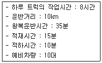
- 25대
- 29대
- 31대
- 36대
(정답률: 알수없음)
16. 다음 조건의 경우, Worrell식에 의한 선별효율(%)은?
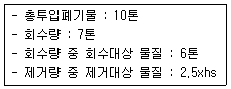
- 약 56
- 약 66
- 약 76
- 약 86
(정답률: 알수없음)
17. 가로의 청결상태를 기준으로 청소상태를 평가하는 것은?
- CEI
- TUM
- USI
- GFE
(정답률: 알수없음)
18. 다음의 폐기물 파쇄에너지 산정 공식을 흔히 무슨 법칙이라 하는가? (단, n=1)
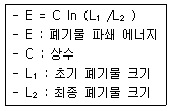
- 리팅거(Rittinger)법칙
- 본드(Bond) 법칙
- 킥(Kink) 법칙
- 로신(Rosin) 법칙
(정답률: 알수없음)
19. 다음 조건을 가진 지역의 일일 최소 쓰레기 수거횟수는?
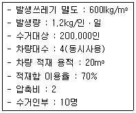
- 2회
- 4회
- 6회
- 8회
(정답률: 알수없음)
20. 0.41ton/m3의 밀도를 갖는 쓰레기 시료를 압축하여 밀도를 0.75ton/m3으로 증가시켰다. 이 때의 부피 감소율은?
- 45%
- 48%
- 52%
- 55%
(정답률: 알수없음)
2과목: 폐기물 처리 기술
21. 다음의 조건에서 침출수 통과년수는?
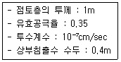
- 약 5.3년
- 약 6.8년
- 약 7.9년
- 약 8.8년
(정답률: 알수없음)
22. 신도시에 분뇨처리장 투입시설을 설계하려고 한다. 1일 수거 분뇨투입량은 200kℓ이고, 수거차 용량이 2.0kℓ/대 수거차 1대의 투입시간은 10분이 소요되며 분뇨처리장 작업시간은 1일 6시간으로 계획하면 분뇨투입구 수는? (단, 최대 수거율을 고려하여 안전율을 1.2배로 한다.)
- 2개
- 4개
- 6개
- 8개
(정답률: 알수없음)
23. 중금속슬러지를 시멘트로 고형화 처리할 경우 다음 조건에서 부피변화율(VCF)은?
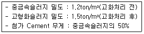
- 1.2
- 1.3
- 1.4
- 1.5
(정답률: 알수없음)
24. 해안매립공법 중 ‘순차투입방법’에 관한 설명으로 틀린 것은?
- 호안측으로부터 순차적으로 쓰레기를 투입하여 육지화하는 방법이다.
- 부유성 쓰레기의 수면확산에 의해 수면부와 육지부의 경계 구분이 어려워 매립장비가 매몰되기도 한다.
- 바닥지반이 연약한 경우 쓰레기 하중으로 연약층이 유동하거나 국부적으로 두껍게 퇴적되기도 한다.
- 수심이 깊은 처분장은 내수를 완전히 배제한 후 순차투입방법을 택하는 경우가 많다.
(정답률: 알수없음)
25. 어떤 소도시에서 하루 폐기물 발생량이 80ton 이었고, 이것을 도랑식으로 매립하려고 한다. 도랑의 깊이가 3m, 폐기물의 밀도가 400kg/m3이며, 매립시 폐기물의 부피감소율이 40% 라고 할 때 연간 필요한 매립토지의 면적은? (단, 복토량 등 기타 조건은 고려하지 않음)
- 12800m2/년
- 14600m2/년
- 16400m2/년
- 17300m2/년
(정답률: 알수없음)
26. 유기적 고형화기술에 대한 설명으로 틀린 것은? (단, 무기적 고형화기술과 비교)
- 수밀성이 크며 처리비용이 고가이다.
- 미생물, 자외선에 대한 안정성이 강하다.
- 방사성 폐기물처리에 적용한다.
- 최종 고화제의 체적 증가가 다양하다.
(정답률: 알수없음)
27. 어떤 분뇨처리장의 1일 처리량이 200m3/일 이며 생분뇨의 BOD5가. 20,000mg/ℓ이라면 이 처리장에서 탈수 후 발생되는 슬러지량은? (단, 슬러지의 비중은 1.0으로 가정하고 처리 후 슬러지 발생량은(건조고형물로서)BOD5 kg당 1kg씩 발생하며 슬러지를 탈수시킨 후 함수율은 75%로 한다.)
- 약 8m3/일
- 약 123/일
- 약 163/일
- 약 193/일
(정답률: 알수없음)
28. 분뇨 저장탱크 내의 악취발생 공간 체적이 40m3이고 이를 시간당 4차례식 교환하고자 한다. 발생된 악취공기를 퇴비여과 방식을 채택하여 투과속도 20m/h로 처리코자 한다. 이 때 필요한 퇴비여과상의 면적은 몇 m2인가?
- 6m2
- 8m2
- 10m2
- 12m2
(정답률: 알수없음)
29. 슬러지개량(conditioning)에 관한 설명 중 틀린 것은?
- 주로 슬러지의 탈수 성질을 향상시키기 위하여 시행한다.
- 주로 화약약품처리, 열처리를 행하며, 수세나 물리적인 세척방법 등도 효과가 있다.
- 슬러지를 열처리 함으로써 슬러지 내의 Colloid와 미세입자 결합을 유도, 고액분리를 쉽게 한다.
- 수세는 주로 혐기성 소화된 슬러지 대상으로 실시하며 소화슬러지의 알카리도를 낮춘다.
(정답률: 알수없음)
30. 매립지에 쓰이는 합성차수막의 재료별 장단점에 관한 설명으로 틀린 것은?
- PVC : 가격은 저렴하나 자외선, 오존, 기후에 약하다.
- HDPE : 온도에 대한 저항성이 높다.
- CSPE : 산과 알카리에 특히 강하다.
- CPE : 접합상태가 양호하다.
(정답률: 알수없음)
31. 토양오염처리방법인 Air Sparging의 적용 조건에 관한 설명으로 틀린 것은?
- 오염물질의 용해도가 낮은 경우에 적용이 유리하다.
- 피압대수층 조건에서 적용이 유리하다.
- 대수층의 투수도가 10-3cm/sec 이상일 때 적용이 유리하다.
- 토양의 종류가 사질토, 균질토일 때 적용이 유리하다.
(정답률: 알수없음)
32. 함수율이 96%이고, 고형물질 중 휘발분이 50%인 생슬러지 500m3를 혐기성 소화하여 함수율 90%의 소화슬러지가 얻어졌다면 이 때 소화슬러지의 발생량은? (단, 소화전후 슬러지의 비중은 1.0이고 소화과정에서 생슬러지의 휘발분은 50%가 분해됨)
- 1⑤m3
- 120m3
- 135m3
- 150m3
(정답률: 알수없음)
33. Trench method를 적용하여 쓰레기를 매립하려 한다. Trench 용량은 1,000m3이며 인구 2,000명, 1인 1일 쓰레기 배출량 1.5kg인 도시에서 발생되는 쓰레기를 매립코자 한다면 Trench의 사용일수는? (단, 압축전 쓰레기 밀도는 200kg/m3이며 매립시 압축에 의해 부피가 40% 감소한다.)
- 278일
- 326일
- 438일
- 512일
(정답률: 알수없음)
34. Soil Washing 기법을 적용하기 위하여 토양의 입도분포를 조사한 결과가 다음과 같을 경우, 균등계수(Cu)와 곡률계수(Cg)는 각각 얼마인가? (단, D10, D30, D60는 각각 통과백분율 10%, 30%, 60%에 해당하는 입자 직경이다.
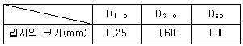
- Cu=2.4, Cg=1.4
- Cu=2.4, Cg=1.7
- Cu=3.6, Cg=1.6
- Cu=3.6, Cg=1.8
(정답률: 알수없음)
35. 시멘트 고형화법 중 자가시멘트법에 대한 설명으로 틀린 것은?
- 혼합율이 낮으며 중금속 저지에 효과적이다.
- 탈수 등 전처리가 필요 없다.
- 장치비가 적고 보조에너지가 필요없다.
- 연소가스 탈황시 발생된 슬러지처리에 사용된다.
(정답률: 알수없음)
36. ‘연직 차수막’에 관한 설명으로 알맞지 않는 것은? (단, 표면 차수막과 비교 기준)
- 지중에 수평방향의 차수층 존재시에 적용된다.
- 지하수 집배수 시설이 필요 하다.
- 지하에 매설하기 때문에 차수성 확인이 어렵다.
- 차수막 단위면적당 공사비는 비싸지만 총공사비는 싸다.
(정답률: 알수없음)
37. 폐수유입량이 10,000m3/일 이고 유입폐수의 SS가 400mg/ℓ이라면 이것을 alum(Al2(SO4)3ㆍ18H2O) 250mg/ℓ로 처리할 때 1일 발생하는 침전슬러지(건조고형물 기준)의 양은? (단, 응집침전시 유입 SS의 75%가 제거되며 생성되는 Al(OH)3는 모두 침전하고 CaSO4는 용존 상태로 존재, Al:27, S:32, Ca:40)
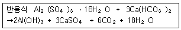
- 약 2200kg
- 약 2700kg
- 약 3100kg
- 약 3600kg
(정답률: 알수없음)
38. A 매립지의 경우 COD를 기준 이내로 처리하기 위해 기존공정에 펜톤처리 공정과 RBC공정을 추가하여 운전하고 있다면 다음 중 공정 추가 원인으로 가장 적합한 것은?
- 난분해성 유기물질의 과다유입
- 휘발성 유기화합물의 과다유입
- 질소성분 과다유입
- 용존고형물 과다유입
(정답률: 알수없음)
39. 토양오염 물질 중 BTEX에 포함되지 않는 것은?
- 벤젠
- 톨루엔
- 자일렌
- 에틸렌
(정답률: 알수없음)
40. 건조된 고형분의 비중이 1.4이며 이 슬러지케익의 건조이전에 고형분의 함량이 40% 이라면 건조 이전 슬러지 케익의 비중은?
- 1.104
- 1.115
- 1.129
- 1.138
(정답률: 알수없음)
3과목: 폐기물 소각 및 열회수
41. 용적밀도가 1000kg/m3인 폐기물을 처리하는 소각로에서 질량감소율과 부피감소율이 각각 85%, 90%인 경우 이 소각로에서 발생하는 소각재의 밀도는?
- 1200kg/m3
- 1300kg/m3
- 1400kg/m3
- 1500kg/m3
(정답률: 알수없음)
42. 전기집진장치(EP)의 특징으로 틀린 것은?
- 압력손실이 적고 미세한 입자까지도 제거할 수 있다.
- 회수할 가치성이 있는 입자의 채취가 가능하다.
- 분진의 부하변동에 대한 적응이 용이하다.
- 운전비, 유지비 비용이 적게 소요된다.
(정답률: 알수없음)
43. 열교환기 종류에 대한 설명 중 틀린 것은?
- 과열기 : 보일러에서 발생하는 건조공기에 수분과 열을 공ㄱ습하여 과열도를 높게 하기 위해 설치한다.
- 재열기 : 대개 과열기의 중간 또는 뒤쪽에 배치된다.
- 절탄기 : 연도에 설치되며 보일러 전열면을 통하여 연소가스의 여열로 보일러 급수를 예열하여 보일러의 효율을 높이는 장치이다.
- 공기예열기 : 굴뚝가스 여열을 이용하여 연소용 공기를 예열, 보일러 효율을 높이는 장치이다.
(정답률: 알수없음)
44. 소각로내 연소가스와 폐기물 흐름에 따른 조작방법에 대한 설명으로 옳지 않은 것은?
- 역류식은 수분이 많고 저위발열량이 낮은 쓰레기에 적합하며 후연소내의 온도저하나 불완전연소의 염려가 없다.
- 병류식은 이송방향과 연소가스의 흐름방향이 같은 형식으로 건조대에서의 건조효율이 저하될 수 있다.
- 교류식은 역류식과 병류식의 중간적인 형식이다.
- 복류식은 2개의 출구를 가지고 있고 댐퍼의 개폐로 역류식, 병류식, 교류식으로 조절할 수 있어 폐기물의 질이나 저위발열량의 변동이 심할 경우에 사용한다.
(정답률: 알수없음)
45. 평균 발열량이 8,000kcal/kg인 P시의 폐기물을 소각하여, 그 지역 난방에 필요한 열에너지를 얻고자 한다. 이 때 지역난방에 필요한 난방수를 하루에 200ton 얻기 위하여 필요한 폐기물의 양(kg/d)은? (단, 난방보일러의 효율은 65%, 보일러 급수온도는 12℃ 보일러 배출수 온도 92℃, 물의 비열은 1.0kcal/kg℃이다.)
- 약 2600
- 약 3100
- 약 4600
- 약 5200
(정답률: 알수없음)
46. 연료를 이론산소량으로 완전 연소시켰을 경우의 이론연소온도는 몇 ℃인가? (단, 발열량 5000kcal/Sm3, 이론연소가스량 20 Sm3/Sm3, 연소가스 평균 정압비열 0.35kcal/Sm3, 실온 15℃이다.)
- 약 670
- 약 690
- 약 710
- 약 730
(정답률: 알수없음)
47. 소각로에서 열교환기를 이용, 고온의 배기가스의 열을 회수ㅗ하여 급수 예열에 활용하고자 한다. 배기가스와 물의 유량은 각 1000kg/hr, 급수 입구온도 25℃, 배기가스 입구온도 660℃, 출구온도 360℃라 할 때 급수의 출구온도(℃)는? (단, 물과 배기가스의 비열은 각각 1.0, 0.24kcal/kg℃)
- 83
- 88
- 92
- 97
(정답률: 알수없음)
48. 도시쓰레기 소각로를 설계하고자 한다. 다음 자료를 이용한 소각로 화격자 면적은? (단, 쓰레기 소각량 : 100ton/day, 쓰레기 삼성분 : 수분(50%), 휘발분(40%), 회분(10%), 화상부하율 : 300kg/m2ㆍhr, 하루가동시간 : 8hr)
- 약 27m2
- 약 34m2
- 약 42m2
- 약 54m2
(정답률: 알수없음)
49. 메탄 10 Sm3를 공기과잉계수 1.2로 연소시킬 경우 습윤연소가스량은?
- 83 Sm3
- 97 Sm3
- 113 Sm3
- 124 Sm3
(정답률: 알수없음)
50. 매시간 4ton의 폐유를 소각하는 소각로에서 발생하는 황산화물을 접촉산화법으로 탈황하고 부산물로 80%의 황산을 회수한다면 회수되는 부산물량(kg/hr)은? (단, 폐유 중 황성분 3%, 탈황율 95%라 가정한다.)
- 약 240
- 약 340
- 약 440
- 약 540
(정답률: 알수없음)
51. 유동층 소각로의 특징이라 할 수 없는 것은?
- 상(床)으로부터 찌꺼기의 분리가 어렵다.
- 기계적 구동부분이 많아 고장율이 높다.
- 유동매체의 축열량이 높은 관계로 단기간 정지 후 가동시에 보조연료 사용 없이 정상가동이 가능하다.
- 연소효율이 높아 미연소분의 배출이 적고 2차 연소실이 불필요하다.
(정답률: 알수없음)
52. 도시생활폐기물을 대상으로 하는 소각시스템에서 발생하는 소각잔재물의 종류에는 바닥재와 비산재가 있다. 다음 중 바닥재에 해당되는 것은?
- Boiler Ash(Heat recovery ash)
- Cyclone Ash
- 대기오염방지시설 잔재물
- Grate siftings
(정답률: 알수없음)
53. 소각로에 발생하는 질소산화물의 발생억제방법으로 알맞지 않은 것은?
- 버너 및 연소실의 구조를 개선한다.
- 배기가스를 재순환한다.
- 예열온도를 높여 연소온도를 낮춘다.
- 2단 연소시킨다.
(정답률: 알수없음)
54. 프로판(C3H8)과 부탄(C4H10)이 60%:40%의 용적비로 혼합된 기체 1Nm3이 완전연소될 때의 CO2 발생량(Nm3)은?
- 2.1Nm3
- 2.4Nm3
- 3.1Nm3
- 3.4Nm3
(정답률: 알수없음)
55. 어떤 폐기물의 원소조성이 다음과 같을 때 이론공기량은? (단, 가연분 : 80%, H=10%, O=40%, S=5%), 수분:10%, 회분:10%)
- 3.1 Sm3/kg
- 3.4 Sm3/kg
- 4.1 Sm3/kg
- 4.4 Sm3/kg
(정답률: 알수없음)
56. 소각로 화격자에서 고온부식은 국부적으로 연소가 심한 장소에서 화격자의 온도가 상승함에 따라 발생한다. 방식대책으로 틀린 것은?
- 화격자의 냉각률을 올린다.
- 공기주입량을 줄여 화격자의 과열을 막는다.
- 부식되는 부분에 고온공기를 주입하지 않는다.
- 화격자의 재질을 고 크롬, 저 니켈강으로 한다.
(정답률: 알수없음)
57. 프로판(C3H8)의 이론적 연소시 부피기준 AFR(air-fuel ratio, mols air/mol fuel)는?
- 21.8
- 22.8
- 23.8
- 24.8
(정답률: 알수없음)
58. 소각할 쓰레기의 량이 10,000kg/day이다. 1일 10시간 소각로를 가동시키고 화격자의 면적이 7.25m2일 경우 이 쓰레기 소각로의 소각능력은?
- 116 kg/m2-hr
- 138 kg/m2-hr
- 176 kg/m2-hr
- 189 kg/m2-hr
(정답률: 알수없음)
59. 증기터어빈 분류관점이 증기작동방식인 경우의 터어빈 형식으로 가장 알맞은 것은?
- 축류 터어빈
- 배압 터어빈
- 반동 터어빈
- 복류 터어빈
(정답률: 알수없음)
60. 착화온도에 대한 설명 중 틀린 것은?
- 화학결합의 활성도가 클수록 착화온도는 높아진다.
- 분자구조가 간단할수록 착화온도가 높아진다.
- 화학반응성이 클수록 착화온도는 낮다.
- 화학적으로 발열량이 클수록 착화온도는 낮다.
(정답률: 알수없음)
4과목: 폐기물 공정시험기준(방법)
61. 다음은 중금속과 각 중금속 분석에 사용되는 흡광광도법을 연결한 것이다. 맞는 것은?
- 구리-피리딘 피라졸론법
- 6가 크롬-디티존법
- 납-디에틸티디오카르바민산법
- 크롬-디페닐카르바지드법
(정답률: 알수없음)
62. 중금속을 흡광광도법을 이용하여 정량하는 경우 분석대상물질과 착염 발색 및 흡광도 파장이 맞게 연결된 것은?
- 6가크롬-황갈색, 440nm
- 구리-적자색, 530nm
- 비스-청색, 640nm
- 카드뮴-적색, 520nm
(정답률: 알수없음)
63. 다음의 내용 중 틀린 것은?
- 유료측정농도는 지정된 시험방법에 따라 시험하였을 경우 그 시험방법에 대한 최소 정량한계를 의미한다.
- 주시험방법은 따로 규정이 없는 한 항목별 시험방법 각 항복의 1법으로 한다.
- 정량범위는 본시험방법에 따라 시험할 경우 정량하한과 정량상한의 최대 표준편차를 말한다.
- 표준편차율은 표준편차를 평균치로 나눈 값의 백분율로 반복조작시의 편차를 상대적으로 표시한 것을 말한다.
(정답률: 알수없음)
64. 다음 용기(容器) 중 취급 또는 저장하는 동안에 밖으로부터의 공기 또는 다른 가스가 침입하지 않도록 내용물을 보호하는 것은?
- 밀폐용기
- 기밀용기
- 밀봉용기
- 차광용기
(정답률: 알수없음)
65. 폐기물이 4.5톤 차량에 적재되어 있을 때 시료를 채취하는 방법에 관한 설명으로 적합한 것은?
- 평면상에서 6등분, 수직면상에서 9등분한 후 각 등분마다 시료채취
- 평면상에서 9등분, 수직면상에서 6등분한 후 각 등분마다 시료채취
- 평면상에서 6등분한 후 각 등분마다 시료채취
- 평면상에서 9등분한 후 각 등분마다 시료채취
(정답률: 알수없음)
66. 흡광광도법의 원리, 개요 및 장치에 대한 설명으로 틀린 것은?
- 빛이 시료용액 중을 통과할 때 흡수나 산란 등에 의해 강도가 변화하는 것을 이용한 것이다.
- 파장의 선택에는 일반적으로 단색화장치 또는 필터를 사용하며 단색화장치로는 프리즘, 회절격자 또는 이두 가지를 조합시킨 것을 사용한다.
- 자외부의 광원으로는 주로 중수소방전관이 사용된다.
- 측광부의 광전측광에는 단광속형, 복광속형이 있으며 단광속형은 자동 기록이 가능하다.
(정답률: 알수없음)
67. 흡광도의 눈금을 보정하기 위하여 사용되는 시약은?
- 과망간산칼륨을 N/20 수산화나트륨용액에 녹여 사용
- 과망간산칼륨을 N/20 수산화칼륨용액에 녹여 사용
- 중크롬산칼륨을 N/20 수산화나트륨용액에 녹여 사용
- 중크롬산칼륨을 N/20 수산화칼륨용액에 녹여 사용
(정답률: 알수없음)
68. 휘발성 저급염소화 탄화수소류를 가스크로마토그래피(용매추출법)법으로 분석할 때 가장 적합한 검출기는?
- 열전도도 검출기(TCD)
- 수소염 이온화 검출기(FID)
- 전자포획형 검출기(FCD)
- 불꽃 광도형 검출기(FPD)
(정답률: 알수없음)
69. 용출용액 중의 PCBs를 가스크로마토그래피법으로 분석할 경우 옳지 않은 설명은?
- 크로마토그래프용 칼럼은 활성탄을 사용한다.
- 검출기는 전자포획형 검출기를 사용한다.
- 농축기는 구데르나다니쉬 농축기 또는 회전증발농축기를 사용한다.
- 시료의 추출용매로서 노말헥산을 사용한다.
(정답률: 알수없음)
70. 시료 농축을 위해 구데르나다니쉬형 농축기 또는 회전증발 농축기를 사용하는 항목은?
- 수은
- 비소
- 시안
- 유기인
(정답률: 알수없음)
71. ()안에 들어갈 내용으로 적합지 못한 것은?
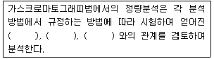
- 크로마토그램의 재현성
- 시료성분의 양
- 분리관의 검출한계
- 피크의 면적 또는 높이
(정답률: 알수없음)
72. 용출시험방법에서 함수율 95%인 시료의 용출 시험결과에 수분함량 보정을 위해 곱해야 하는 값은?
- 1.5
- 3.0
- 4.5
- 5.0
(정답률: 알수없음)
73. 휘발성 고형물이 15%, 고형물이 40%인 경우 강열감량(%) 및 유기물함량(%)은 각각 얼마인가?
- 60 및 27.5
- 60 및 37.5
- 75 및 27.5
- 75 및 37.5
(정답률: 알수없음)
74. 음식물 폐기물의 수분을 측정하기 위해 실험하였더니 다음과 같은 결과를 얻었다. 수분은 몇 %인가?
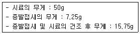
- 87%
- 83%
- 78%
- 74%
(정답률: 알수없음)
75. 폐기물 시료 용기에 기재해야 할 사항이 아닌 것은?
- 폐기물 명칭 및 대상 폐기물의 양
- 폐기물 채취 시간 및 일기
- 채취책임자 이름 및 시료번호
- 채취 장비 및 분석방법
(정답률: 알수없음)
76. 흡광광도법을 이용하여 분석할 때 방해물의 제거 방법으로 옳은 것은?
- 잔류염소 : 아비산나트륨 용액 첨가
- 잔류염소 : 초산아연 용액 첨가
- 황화물 : L-아스코르빈산 용액 첨가
- 황화물 : 질산은 용액 첨가
(정답률: 알수없음)
77. 가스크로마토그래피법을 이용한 유기인 분석 원리에 관한 설명으로 틀린 것은?
- 유기인 화합물 중 이피엔, 파라티온, 메틸디메톤, 다이아지논 및 펜토에이트의 측정에 적용된다.
- 정량범위는 사용하는 장치 및 측정조건에 따라 다르지만 각 성분당 0.001~0.02μg이다.
- 컬럼충전제는 2종 이상을 사용하여 그 중 1종 이상에서 확인된 성분을 정량한다.
- 유효측정농도는 0.00⑤mg/L 이상으로 한다.
(정답률: 알수없음)
78. 단색광이 임의의 시료용액을 통과할 때 그 빛의 75%가 흡수되었다면 흡광도는?
- 0.125
- 0.250
- 0.602
- 0.750
(정답률: 알수없음)
79. 다량의 점토질 또는 규산염을 함유하고 있는 시료의 전처리 방법은?
- 질산-황산-불화수소산에 의한 유기물 분해
- 질산-과염소산-불화수소산에 의한 유기물 분해
- 질산-염산-불화수소산에 의한 유기물 분해
- 질산-황산-과염소산에 의한 유기물 분해
(정답률: 알수없음)
80. 대상폐기물의 양과 채취시료의 최소 수를 알맞게 짝지은 것은?
- 10톤-14
- 20톤-26
- 200톤-36
- 900톤-50
(정답률: 알수없음)
5과목: 폐기물 관계 법규
81. 대통령령이 정하는 페기물처리시설을 설치ㆍ운영하는 자는 그 폐기물처리시설의 설치ㆍ운영이 주변지역에 미치는 영향을 몇 년마다 조사하여야 하는가?
- 10년
- 5년
- 3년
- 2년
(정답률: 알수없음)
82. 사후관리기준 및 방법 중 해수수질 조사방법기준에 관한 내용으로 옳은 것은? (단, 매립지의 경계선이 해수면과 가까운 매립시설임)
- 월 1회 이상 조사
- 분기 1회 이상 조사
- 반기 1회 이상 조사
- 년 1회 이상 조사
(정답률: 알수없음)
83. 폐기물관리법에서 사용되는 용어의 정의로 옳지 않은 것은?
- ‘처리’란 폐기물의 소각ㆍ파쇄ㆍ고형화 등의 중간처리와 매립하거나 해역으로 배출하는 등의 최종처리를 말한다.
- ‘폐기물처리시설’이란 폐기물의 중간처리시설과 최종처리시설로서 환경부령이 정하는 시설을 말한다.
- ‘폐기물’이란 쓰레기, 연소재, 오니, 폐유, 폐산, 폐알칼리 및 동물의 사체 등으로서 사람의 생활이나 사업활동에 필요하지 아니하게 된 물질을 말한다.
- ‘생활폐기물’이란 사업장폐기물 외의 폐기물을 말한다.
(정답률: 알수없음)
84. 지정폐기물인 유해물질함유 폐기물(환경부량이 정하는 물질을 함유한 것임)에 관한 내용으로 옳지 않은 것은?
- 광재(철광원석의 사용으로 인한 고로슬래그는 제외한다.)
- 분진(대기오염방지시설에서 포집된 것과 소각시설에서 발생되는 것을 모두 포함한다.)
- 폐내화물 및 재벌구이 전에 유약을 바른 도자기 조각
- 폐흡착제 및 폐흡수제(광물유ㆍ동물유 및 식물유의 정제에 사용된 폐토사를 포함한다.)
(정답률: 알수없음)
85. 폐기물 처리 담당자 등은 3년마다 교육을 받아야 하는ㄷ 폐기물처리시설의 기술관리인이나 폐기물처리시설의 설치자로서 스스로 기술관리를 하는 자에 대한 교육기관에 해당하지 않는 것은?
- 환경관리공단
- 국립환경인력개발원
- 한국폐기물협회
- 환경보전협회
(정답률: 알수없음)
86. 지정폐기물의 수집ㆍ운반ㆍ보관기준에 관한 설명으로 옳은 것은?
- 폐농약ㆍ폐촉매는 보관 개시일부터 30일을 초과하여 보관하여서는 아니된다.
- 수집ㆍ운반차량은 녹색도색을 하여야 한다.
- 지정폐기물과 지정폐기물 외의 폐기물을 구분없이 보관하여야 한다.
- 폐유기용제는 휘발되지 않도록 밀폐된 용기에 보관한다.
(정답률: 알수없음)
87. 폐기물재활용신고자가 승인을 얻은 보관시설에 태반을 보관하는 경우, 보관시설을 승인함에 있어서 따라야하는 기준으로 옳지 않은 것은? (단, 폐기물처리사업장 외의 장소에서의 폐기물보관시설기준)
- 태반의 배출장소와 그 태반재활용시설이 있는 사업장의 거리가 100킬로미터 미만일 것
- 보관시설에서의 태반보관허용량은 5톤 미만일 것
- 보관시설에서의 태반보관기간은 태반이 보관시설에 도착한 날부터 5일 이내일 것
- 폐기물재활용신고자는 약사법 규정에 의한 의약품제조업허가를 받은 자일 것
(정답률: 알수없음)
88. 폐기물처리시설 중 생물학적처리시설(사료화ㆍ퇴비화ㆍ소멸화시설)에 관한 설명으로 옳은 것은?
- 1일 처리능력 200kg 이상인 시설에 한정하며 건조에 의한 사료화ㆍ퇴비화시설을 포함한다.
- 1일 처리능력 100kg 이상인 시설에 한정하며 건조에 의한 사료화ㆍ퇴비화시설을 포함한다.
- 1일 처리능력 200kg 이상인 시설에 한정하며 건조에 의한 사료화ㆍ퇴비화시설을 제한다.
- 1일 처리능력 100kg 이상인 시설에 한정하며 건조에 의한 사료화ㆍ퇴비화시설을 제한다.
(정답률: 알수없음)
89. 폐기물처리시설 중 기계적 처리시설의 분류기준으로 옳지 않은 것은?
- 압축시설(동력 10마력 이상인 시설로 한정)
- 절단시설(동력 10마력 이상인 시설로 한정)
- 파쇄ㆍ분쇄시설(동력 10마력 이사ᅟᅣᆼ인 시설로 한정)
- 용융시설(동력 10마력 이상인 시설로 한정)
(정답률: 알수없음)
90. 영업정지기간 중에 영업을 한 폐기물처리업자에게 부과되는 벌칙기준으로 옳은 것은?
- 6월 이하의 징역 또는 3백만원 이하의 벌금
- 1년 이하의 징역 또는 5백만원 이하의 벌금
- 2년 이하의 징역 또는 1천만원 이하의 벌금
- 3년 이하의 징역 또는 2천만원 이하의 벌금
(정답률: 알수없음)
91. 사업장일반폐기물의 종류별 처리기준 및 방법에서 소각이 곤란한 폐고무류의 경우에는 최대지름 몇 cm이하의 크기로 파쇄ㆍ절단한 후 관리형 매립시설에 매립하여야 하는가?
- 15cm
- 10cm
- 5cm
- 2cm
(정답률: 알수없음)
92. 폐기물 관리법상 폐기물의 수집ㆍ운반ㆍ처리 책임자로 가장 적절한 자는?
- 유역환경청장
- 배출자
- 시ㆍ도지사
- 시장ㆍ군수ㆍ구청장
(정답률: 알수없음)
93. 다음 중 재활용폐기물의 에너지 회수기준으로 옳지 않은 것은?
- 다른 물질과 혼합하지 아니하고 해당 폐기물의 저위 발열량이 3,000kcal/kg 이상일 것
- 에너지 회수효율(회수에너지 총량을 투입에너지 총량으로 나눈 비율을 말한다.)이 75% 이상일 것
- 회수열의 50% 이상을 열원으로 이용하거나 다른 사람에게 공급할 것
- 환경부장관이 정하여 고시하는 경우에는 폐기물의 30%이상을 원료나 재료로 재활용하고 그 나머지 중에서 에너지회수에 이용할 것
(정답률: 알수없음)
94. 폐기물처리업의 허가를 받을 수 없는 경우에 해당하지 않는 것은?
- 미성년자ㆍ금치산자 또는 한정치산자
- 파산선고를 받고 복권되어 2년이 지나지 아니한 자
- 폐기물관리법을 위반하여 징역 이상의 형의 집행유예를 선고 받고 그 집행유예기간이 지나지 아니한 자
- 폐기물처리업의 허가가 취소된 자로서 그 허가가 취소된 날부터 2년이 지나지 아니한 자
(정답률: 알수없음)
95. 폐기물을 재활용하고자 하는 자는 신고서를 재활용 개시 몇 일전까지 누구에게 신고하여야 하는가?
- 15일, 시ㆍ도지사
- 15일, 군수
- 30일, 시ㆍ도지사
- 30일, 군수
(정답률: 알수없음)
96. 환경부장관은 국가 폐기물 관리 종합계획을 10년마다 세워야 하는데 이러한 종합계획은 세운 날부터 몇 년 후에 타당성을 재검토하여 변경할 수 있는가?
- 1년
- 2년
- 4년
- 5년
(정답률: 알수없음)
97. 다음 중 기술관리인을 두어야 할 폐기물 처리시설이 아닌 것은?
- 시간당 처리능력이 120킬로그램인 의료폐기물 대상 소각시설
- 면적이 3천5백 제곱미터인 지정폐기물 매립시설
- 절단시설로서 1일 처리능력이 150톤인 시설
- 연료화시설로서 1일 처리능력이 8톤인 시설
(정답률: 알수없음)
98. 음식물류 폐기물 처리시설에서 기술관리인의 자격기준에 해당하지 않는 것은?
- 폐기물처리산업기사
- 대기환경산업기사
- 토목산업기사
- 위생사
(정답률: 알수없음)
99. 다음은 제출된 폐기물 처리사업계획서의 적합통보를 받은자가 천재지변이나 그 밖의 부득이한 사유로 정해진 기간 내에 허가신청을 하지 못한 경우에 실시하는 연장기간에 대한 설명이다. ()안에 기간이 옳게 나열된 것은?
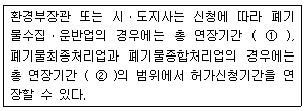
- ① 6개월, ② 2년
- ① 1년, ② 3년
- ① 6개월, ② 3년
- ① 1년, ② 4년
(정답률: 알수없음)
100. 다음 중 폐기물 처리기본계획에 포함되어야 할 사항이 아닌 것은?
- 폐기물의 종류별 발생량과 장래의 발생 예상량
- 폐기물의 감량화와 재활용 등 자원화에 관한 사항
- 폐기물 관리 여건 및 전망
- 재원의 확보 계획
(정답률: 알수없음)
따라서, 1인당 1일에 처리할 수 있는 쓰레기 양은 다음과 같다.
1인당 1일 처리량 = 3,000,000 / 4,500 / 300 / 8 = 1.04 톤/인/일
이제 MHT 값을 구하기 위해, 1인당 1일 처리량을 1로 나누어주면 된다.
MHT = 1 / 1.04 = 0.96 시간/톤
하지만, 문제에서는 소수점 첫째자리까지만 구하도록 하였으므로,
MHT = 0.96 ≈ 3.6
따라서, 정답은 3.6이다.